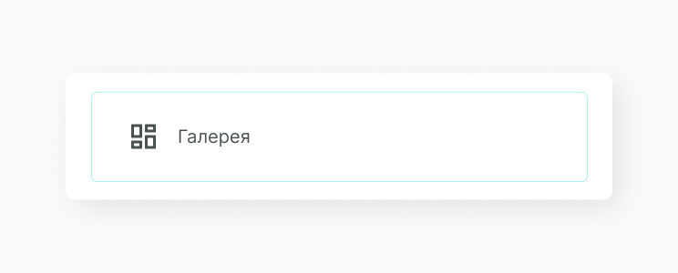
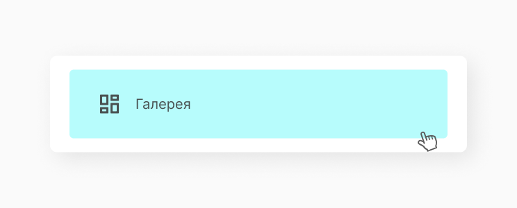
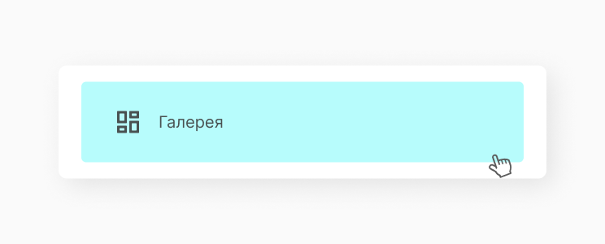
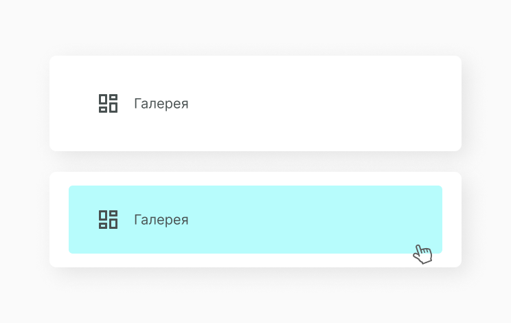

Menu Item
Чтобы собрать menu нам необходимо создать интерактивный элемент который мы называем menu item. Он также собирается в коллекцию и походят на option list визуально, но не функционально. Главная задача menu item выводить пункты menu, возможно иметь иконку и навигировать пользователя внутри сервиса.
Структура компонента
Menu Item может содержать в себе различные типы данных: иконку, текст, картинку, в зависимости от назначения. В данном примере рассматриваем вариант с иконкой и текстом. Все стили создаются в отдельном файле, чтобы придерживаться принципа проектирования компонента в изоляции.
Состояние компонента
Так как menu item является малой функциональной частью структуры menu, в которую входит коллекция из menu item, мы выделяем только анимацию hover, при наведении на элемент списка.
 
Реализация
Для начала в папке с компонентами создаем новую папку A_MenuItem, в неё кладем A_MenuItem.jsx и A_MenuItem.css. Затем описываем принимаемые атрибуты и icon из папки Q_Icon.
import classnames from 'classnames'
import React, { PureComponent } from 'react'
import './A_MenuItem.css'
export default class A_MenuItem extends PureComponent {
constructor(props) {
super(props)
}
render() {
const { text, icon, url, active } = this.props
const classes = classnames({
A_MenuItem: true,
active: active
})
const iconClasses = classnames({
Q_Icon: true,
[`${icon}`]: true
})
return (
<a className={classes} href={url}>
<div className={iconClasses}></div>
{text}
</a>
)
}
}Затем прописываем стили для A_MenuItem и Q_Icon. Для icon задаем размеры контейнера и его позиционирование, в него будет рендериться svg заданная в menu иконка.
.A_MenuItem {
display: flex;
width: 304px;
padding: 20px 40px;
border-radius: 6px;
font-size: 20px;
font-weight: 300;
color: #426060;
cursor: pointer;
align-items: center;
text-decoration: none;
}
.A_MenuItem .Q_Icon {
width: 35px;
margin-right: 20px;
height: 35px;
cursor: pointer;
}
.A_MenuItem:hover {
text-decoration: none;
background-color: #dcffff;
}Мы создали компонет, но описали только его функционал, теперь его нужно отрендерить. Попробуй теперь этот компонент вывести согласно своей структуре проекта. Ты можешь увидеть как это делаем мы, а также посмотреть получившийся menu item.
import React from 'react'
import ReactDOM from 'react-dom'
import A_MenuItem from '../../components/atoms/A_MenuItem/A_MenuItem.jsx'
document.addEventListener('DOMContentLoaded', () => {
ReactDOM.render(
<A_MenuItem text={'Профиль'} icon={'user'} />,
document.body
)
})Получаем следующий результат:
Ссылки
Также для тебя ссылки на Figma с дизайн системой и GitHub с библиотекой компонентов.
Составляющие
В этот компонент часто выводится следующие компоненты.
Этот компонент часто выводится в следующих компонентах